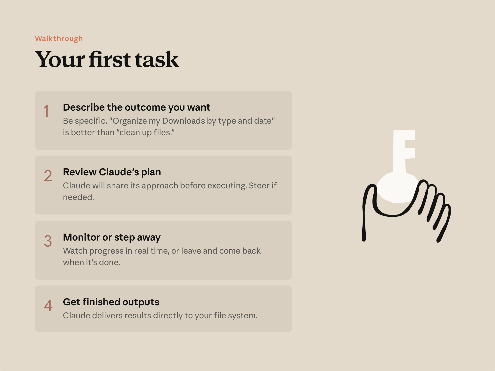
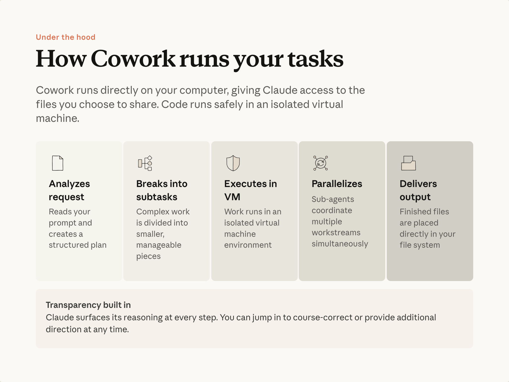
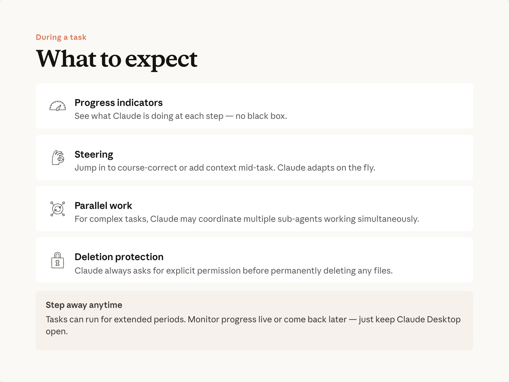

예상 소요 시간: 15분
학습 목표
이 레슨을 마치면 다음을 할 수 있습니다:
- 유용한 계획을 얻을 수 있을 만큼 명확하게 Cowork에 작업을 설명하기
- 작업 시작 전과 실행 중에 접근 방식 조정하기
- 올바른 검토 마인드셋으로 완성된 결과물 접근하기
핵심 루프

Claude는 행동을 취하기 전에 계획을 제안하고 승인을 기다립니다. 필요하면 조정하고, 승인하면 Claude가 실행합니다. 이것이 모든 Cowork 작업의 패턴입니다.
1. 원하는 결과물 설명하기
프롬프트는 Claude에게 무엇을 볼지 , 원하는 결과물이 무엇인지 , 그리고 어디에 저장할지 를 알려줄 때 잘 작동합니다. 완벽한 프롬프트를 작성할 필요는 없습니다—빠뜨린 내용은 Claude가 추가 질문을 통해 확인합니다.
"이번 주에 우리 커버리지 기업 세 곳이 실적을 발표했습니다. 트랜스크립트는 우리 모델과 지난 분기 노트와 함께 내 폴더에 있습니다. 트랜스크립트를 우리 모델과 비교해서 읽고, Slack의 #research-desk에서 팀이 하는 말을 확인한 후, 리서치 노트를 업데이트해 주세요. 우리의 가정을 바꾸는 내용은 표시해 주세요."
2. 몇 가지 질문에 답하기
프롬프트와 찾은 내용을 바탕으로, Claude는 결과물을 제대로 만들기 위해 몇 가지 질문을 합니다—어떤 접근 방식을 취할지, 무엇을 우선시할지, 완성된 작업이 어떻게 보여야 할지. Claude가 제시하는 옵션 중 하나를 선택하거나 직접 답변을 입력하세요.
3. 자리를 비우거나—개입하거나
진행 패널에 각 단계가 표시됩니다: Claude가 읽고 있는 파일, 만들고 있는 것. 대규모 작업의 경우 Claude는 작업을 여러 부분으로 나누어 동시에 처리합니다. 그냥 두고 나중에 돌아오거나, 의도하지 않은 방향으로 가는 것을 발견하면 채팅에 입력해서 방향을 바꾸세요.
4. 완성된 작업 열기
결과물은 지정한 위치에 저장됩니다—Claude가 읽은 파일들과 함께 폴더에 저장됩니다. 프롬프트에서 다른 내용을 요청했다면 ("Gmail에서 이메일 초안 작성" 또는 "공유 드라이브 폴더에 저장"), 그곳에 나타납니다.
결과물을 초안으로 취급하세요. 능력 있는 동료가 처음 작성한 글을 읽듯이 읽어보세요: 보내기 전에 직접 다듬어야 하는 좋은 작업입니다.
경험을 형성하는 몇 가지 요소


Cowork를 사용하기 위해 내부 작동 방식을 알 필요는 없습니다. 하지만 대략적인 그림을 이해하면 더 나은 프롬프트를 작성하고 어떤 작업이 적합한지 파악하는 데 도움이 됩니다.
- 서브에이전트 — 작업에 독립적인 부분이 있을 때, Cowork는 각자의 역할과 새로운 컨텍스트를 가진 별도의 작업 흐름을 동시에 실행할 수 있습니다. 네 개의 공급업체를 비교할 때: 공급업체당 하나의 서브에이전트가 다른 공급업체의 자료에 방해받지 않고 각각 가격, 통합, 리뷰를 조사합니다. 결과는 하나의 출력물로 합성됩니다. 실제로: 하나의 대화에 담기에 너무 큰 작업은 각각 편안하게 맞는 조각으로 나눌 수 있으며, 각 조각은 집중적인 주의를 받습니다—세 번째 공급업체 분석이 첫 번째 공급업체 세부사항으로 희석되지 않습니다.
- 진행 상황이 보입니다 — 패널에 어떤 단계가 활성화되어 있는지, 어떤 파일이 읽히고 있는지, 무엇이 만들어지고 있는지 표시됩니다. 따라가거나 무시할 수 있습니다.
- 실행 중에도 방향을 조정할 수 있습니다 — 의도하지 않은 방향으로 가는 경우 채팅에 입력해서 방향을 바꾸세요. 완료될 때까지 기다릴 필요가 없습니다.
- 격리된 환경 — 코드가 실행되고 파일이 만들어지는 격리된 환경은 메인 시스템과 분리되어 있으며, 접근 권한을 부여하지 않은 항목은 건드리지 않습니다.
- 삭제는 승인이 필요합니다 — Cowork는 파일을 영구적으로 삭제하기 전에 먼저 묻습니다. 승인하거나 거절할 수 있습니다.
실전 예시: 흩어진 폴더가 완성된 프레젠테이션으로
실제 루프를 살펴봅니다. 파일에서 내용을 가져와 완성된 결과물을 만드는 모든 작업에서 구조는 동일합니다.
시작점
일반적인 파일들이 쌓인 프로젝트 폴더: 회의 노트, 체크리스트, 타임라인 스프레드시트, 저장된 이메일들, 비교 매트릭스. 다양한 형식으로 느슨하게 정리되어 있습니다.
목표: 이것을 리더십 발표 자료로 만들기.
작업 설명하기
"이 폴더의 모든 내용을 검토하고 툴링 검토를 위한 리더십 프레젠테이션을 만들어 주세요. 공급업체 평가 결과, 타임라인, 비즈니스 케이스, 그리고 미해결 리스크를 포함해 주세요. PowerPoint 파일로 출력해 주세요."
계획 검토하기
Cowork가 계획을 보여줍니다: 파일 읽기, 제안서 합성, 비즈니스 케이스 구성, 덱 생성, 결과 검토. 추가하고 싶은 것이 있다면—예를 들어 PowerPoint와 함께 PDF도—여기서 말할 수 있습니다.
실행하기
원하면 지켜보거나, 회의에 가도 됩니다. 작업은 계속됩니다.
파일 열기
덱은 실제 PowerPoint 파일입니다. 차트는 클릭해서 조정할 수 있는 편집 가능한 요소입니다. 직접 처음부터 조립하는 것보다 훨씬 완성에 가까운 상태에서 시작하는 초안입니다.
작게 시작하기
명확한 경계가 있는 작업부터 시작하세요—폴더 정리, 문서 세트 합성. Cowork가 잘 처리하는 것에 대한 감각을 키운 다음 규모를 늘려가세요.
실제로 적용해 보기
레슨 1에서 파악한 작업을 사용하세요. Cowork를 관련 폴더로 안내하고, 원하는 결과물을 설명한 후 루프를 실행하세요.
이러한 습관에 대한 자세한 내용은 AI 유창성 과정 을 참조하세요.
다음 단계
다음으로, Cowork에 매 세션마다 읽는 컨텍스트를 제공하는 방법을 배웁니다—매번 같은 내용을 다시 설명하지 않아도 되도록.
피드백
피드백을 여기 에서 공유해 주세요.
감사의 말 및 라이선스
Copyright 2026 Anthropic. All rights reserved.